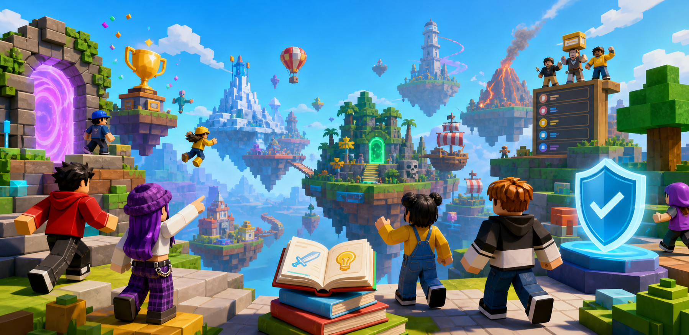

Roblox discovery, guides, codes, and safety ratings
Find Roblox games worth your time.
Search curated game pages with play style tags, age guidance, spending pressure, scam-risk notes, beginner guides, and honest rankings for players and parents.
Live Player Tools
Pick a game by mood, risk, and live heat.
BlockRadar updates Roblox activity data automatically, then turns it into quick choices players can actually use.
Hot right now
UpdatingGame Finder
Tonight's pick
Today's Roblox Picks
Fast answers for players opening Roblox right now.
These pages turn common player questions into clear paths: what to play when bored, what is safe for younger kids, what works without Robux, and what feels like a favorite game.
Player Sticky Tools
Pick by situation, not just by rank.
Players come back when the site helps them decide fast: two-player sessions, safe starts, simulator grinds, and friend-night choices.
Roblox Game Finder
Choose a game by mood, group size, spending pressure, scare level, and time available.
Games for 2 Players
Quick picks for duos: co-op, roleplay, survival, fashion voting, and short competitive rounds.
Best Simulator Games
Progression games ranked by grind, free-player fairness, code usefulness, and kid-friendly clarity.
Game Library
Curated Roblox games
Each card leads to a game hub with a safety snapshot, beginner route, parent notes, spending context, and official Roblox link.
Editor's Brief
Turn Roblox chaos into clear choices.
Roblox players search for codes, tips, rankings, and similar games. Parents search for risk signals. BlockRadar combines both intents so each page can rank in search while still being genuinely useful.
Free-player picksFind games that are fun before spending Robux.
Parent-safe startsReview age fit, scares, chat, and scam exposure.
Live popularitySee which Roblox games have the most active players today.
Similar gamesFind alternatives to big games by play style and risk level.
Scam protectionExplain fake Robux, trust trades, and outside-link traps.
Score methodShow how safety ratings are assigned and updated.
Rankings
What players are actually looking for
Dedicated lists answer high-intent searches: beginner games, friend games, horror games, tycoon games, safe kids games, and free-player picks.
Best for new players
- Brookhaven RPEasy social play
- Natural Disaster SurvivalQuick rounds
- Epic MinigamesLow learning curve
- Theme Park Tycoon 2Creative sandbox
- Tower of HellSkill practice
Needs extra checks
- Trading-heavy gamesScam risk
- Horror experiencesAge sensitivity
- Gacha-style simulatorsSpending pressure
- External chat invitesPrivacy risk
- Fake Robux eventsAccount theft
Best with friends
- DoorsCo-op tension
- EvadeTeam survival
- Dress to ImpressSocial voting
- Blade BallFast matches
- Blox FruitsLong progression
Guides
Pages players can never find fast enough
Every game hub should answer the same urgent questions: how to start, what to avoid, what is worth buying, how codes work, and which similar games are better for a specific play style.
Blox Fruits beginner routeLeveling, fruit choices, codes, and free-player notes
Doors survival checklistRoom tips, monster tells, age guidance, and scare level
Dress to Impress style guideThemes, voting habits, outfit ideas, and spending notes
Roblox scam warning centerFake Robux pages, trade traps, and external link red flags
Best free-player Roblox gamesLow spending pressure, fair progression, and skill-first picks
Safe Roblox games for kidsParent-friendly picks, watch-outs, and review checklist
Safety Scores
The layer most Roblox sites are missing
Parent-friendly
Low spending pressure, simple interactions, limited scary content, and clear gameplay goals.
Check first
Fun for many players, but parents should review chat intensity, purchases, or horror themes.
Needs caution
High scam exposure, heavy monetization, mature roleplay, intense scares, or external chat pressure.
Creator Portal
A fairer way for good Roblox games to be found
Small developers can submit games with genre, player count, safety notes, monetization model, update cadence, and creator contact. Editorial review keeps rankings useful instead of pay-to-win.
View editorial plan